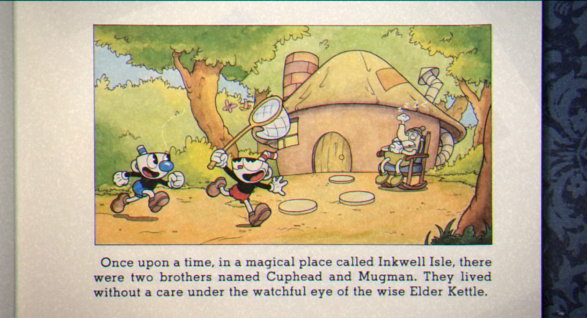
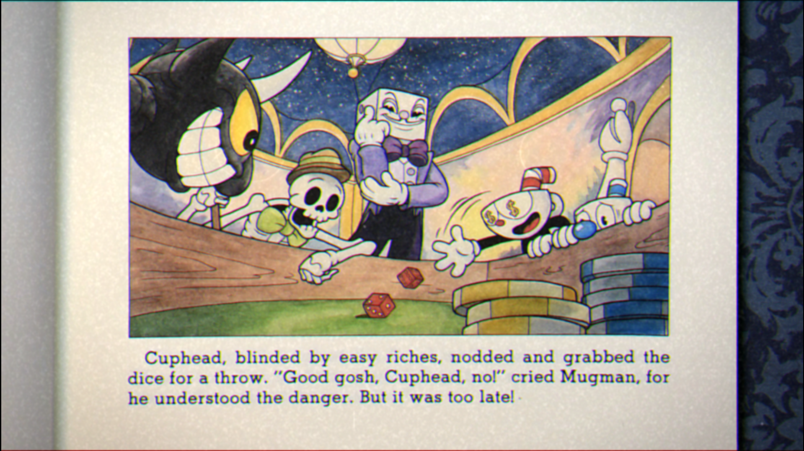
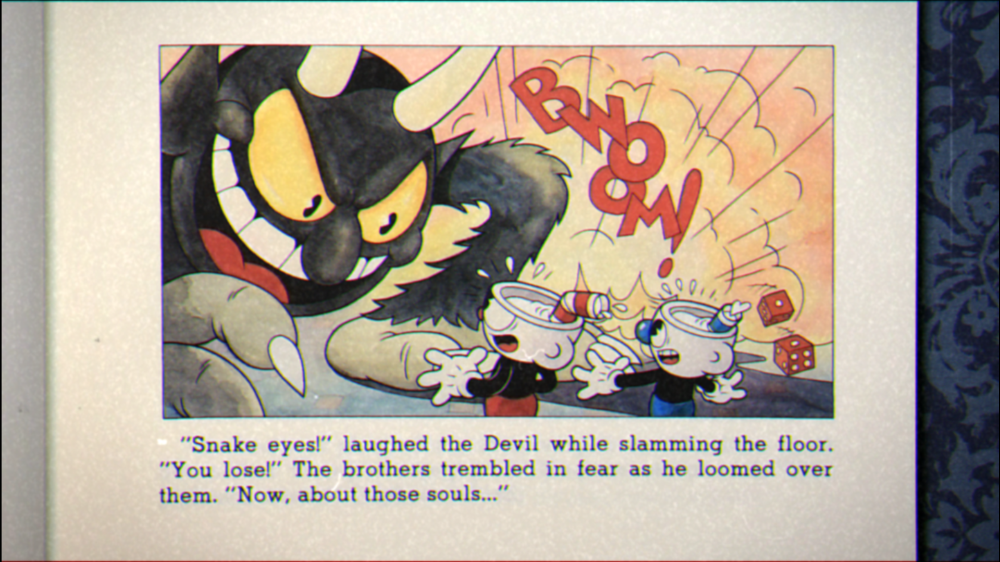
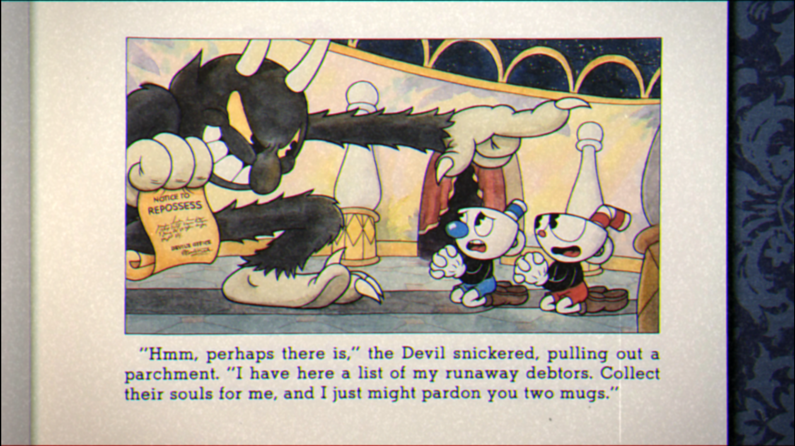
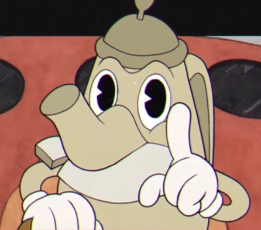
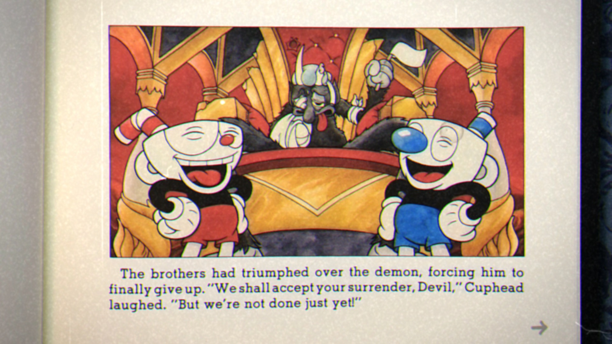
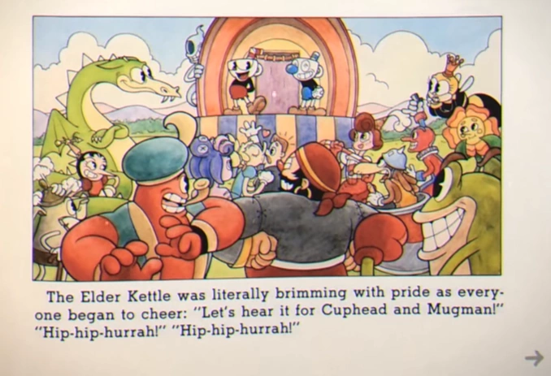

A história é bem simples, porém amarra os bosses do jogo numa mesma linha histórica e condizente. Tudo começa quando dois irmãos avistam um cassino e começam a ganhar todas as apostas de lá, logo chamam o dono do cassino, que é o próprio Diabo. Eles fazem um contrato com o Diabo e se ganharem a aposta, ganham todas as riquezas do cassino, e se perderem vendem sua alma para o Diabo. Os irmãos perdem e imploram misericórdia, sendo aí que conseguem um outro acordo: se eles trouxerem as almas de alguns seres que estão devendo pro Coisa Ruim, eles serão poupados




E vai tendo continuidade na história durante o jogo, com pausas apenas nas trocas de ilhas, com diálogos com o Rei Dado e o Vovô Chaleira. A história continua enquanto vamos derrotando os bosses e conquistando os contratos de alma de cada um
Nós chegamos a um fim quando o Diabo, que é o último boss do jogo, é derrotado e salvamos todos da cobrança dele. E os dois irmãos acabam sendo tratados como heróis

